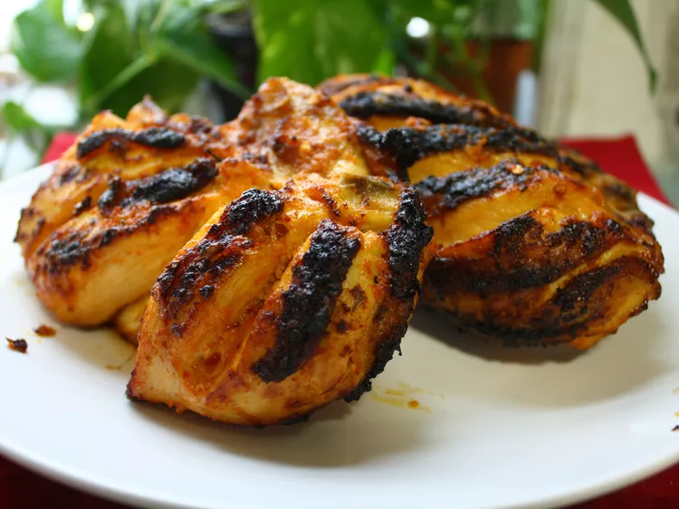

Peri Peri Chicken

Description
This peri peri chicken recipe features a great spicy marinade for an African dish that's great for a barbecue.
Ingredients
- 1 cup fresh lemon juice
- 1/4 cup paprika
- 2 tablespoons hot chili powder
- 3 cloves garlic, minced
- 1 1/2 teaspoons chopped fresh ginger
- 1 1/2 teaspoons salt
- 4 bone-in chicken breast halves
Steps
- Stir together lemon juice, paprika, chili powder, garlic, ginger, and salt in a large bowl until well combined. Add chicken; rub until well coated and marinate in the refrigerator for 3 hours.
- Preheat a grill for medium heat and lightly oil the grates.
- Place chicken onto the preheated grill; discard marinade. Cook, turning occasionally, until skins are slightly charred and the juices run clear, about 30 minutes. An instant-read thermometer inserted into the center of chicken should read at least 165 degrees F (74 degrees C).